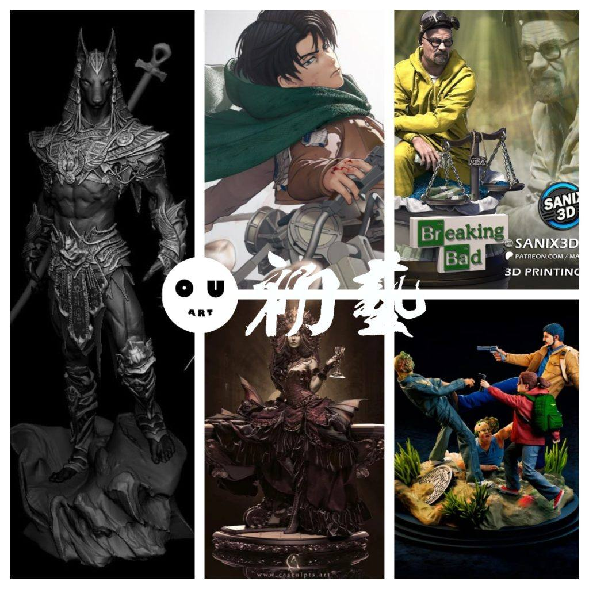
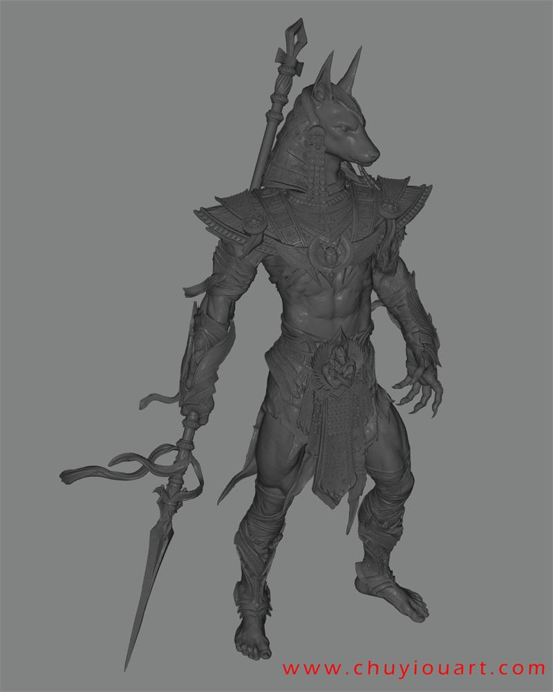
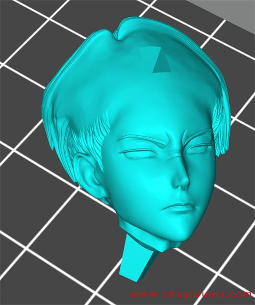
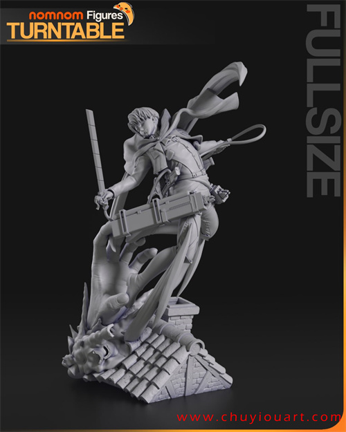
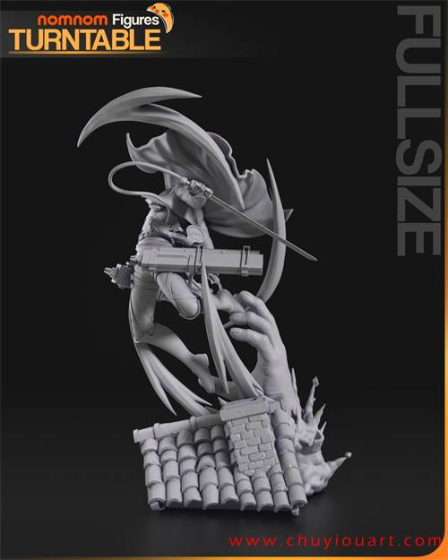
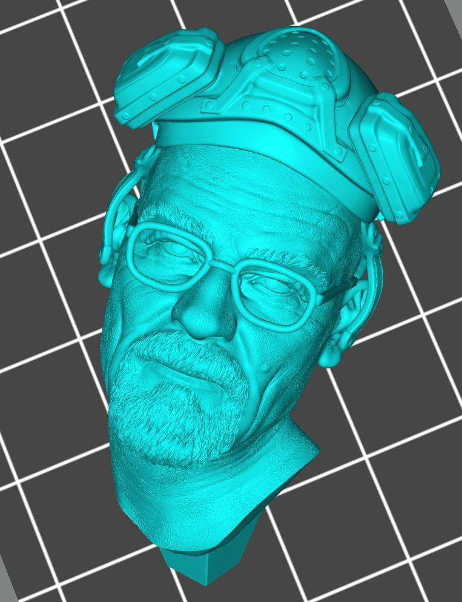
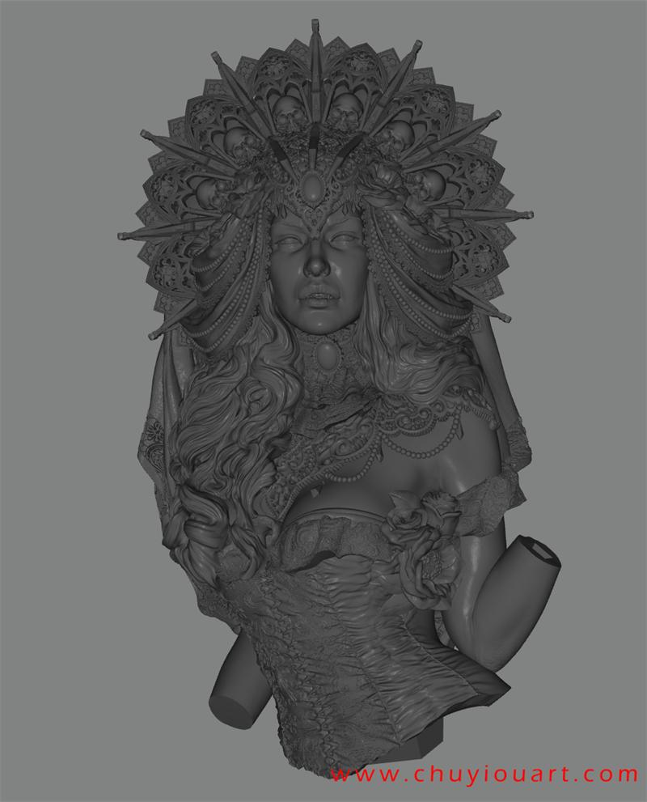
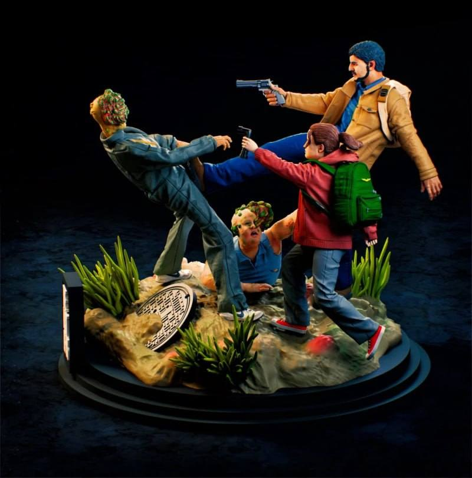
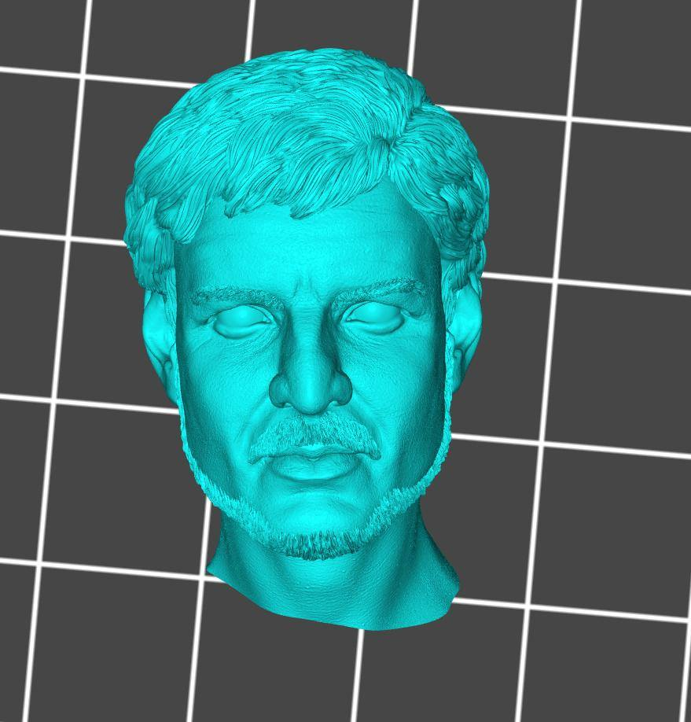

模型分享
10月09日STl图纸文件分享

1.阿努比斯，非常帅，非常精致，打印测试和涂装的佳品，有分件和一体的文件，各种比例都有提供。
链接：https://pan.baidu.com/s/1-x8CusO5kCKg1BxBgZ3wug
提取码：6kz9


2.进击的巨人——利威尔·阿克曼，nomnom出品，依然多动态多造型，分件细致。
链接：https://pan.baidu.com/s/1bHf1uFibb3Qf3tWjUYIJdQ
提取码：f1jb




3.绝命毒师——老白，华特的小圆雕场景，细节到位。配件很好。
链接：https://pan.baidu.com/s/14aWaiQhO8ZY_rdriF9kFZg
提取码：g6og


4.伊莎贝尔女族长，细致程度高，可惜没有分件。
链接：https://pan.baidu.com/s/1WQ5tAKrFsM0mO58aE3Q1NQ
提取码：8c07


5.最终生还者——美剧版，这个和之前分享的相比，细节会弱一些，不过造型还比较还原剧中角色，分件也用心了。
链接：https://pan.baidu.com/s/1IazG2SKtMAqX6HtSRhmrNg
提取码：lgwg




以上内容仅供个人使用（非商用）
ONLY for PERSONAL (NON-COMMERCIAL) use.
加群获得更多免费模型！